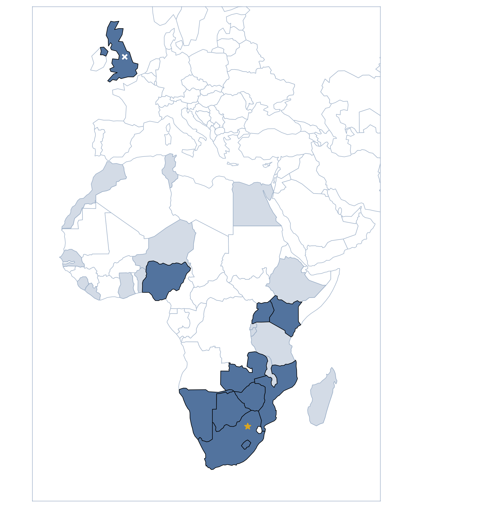

The Leeds-Africa Conference on Data Science and AI
Future Africa Campus, University of Pretoria, South Africa - October 2023
The Leeds-Africa Conference on Data Science and AI was organised to create a forum for sharing insights across research areas that are being transformed by developments in artificial intelligence, machine learning and data science. We sought to bring together experts from the UK and across Africa in order to build new partnerships and collaborations, giving researchers the opportunity to share their research with new communities and discover new applications for theoretical developments in mathematical and computational methods.
 At the close of registration, we had received over 300 expressions of interest to attend from researchers and/or students across 30 different African countries (shown in light blue on the map). From these expressions of interest we were able to fully support the attendance of 70 delegates with representation from 12 different African countries: Botswana, Eswatini, Kenya, Lesotho, Mauritius, Mozambique, Namibia, Nigeria, South Africa, Uganda, Zambia, and Zimbabwe (shown in dark blue on the map).
The conference consisted of plenary talks on subjects ranging from astronomy, biology, ecology, waste management, climate, oceanography, healthcare, natural language processing, image based machine learning and the ethics of artificial intelligence. The final two days were devoted to participant-led sessions ranging from tutorials on specific techniques, short talks, or discussion sessions on a variety of topics.
The original conference website can be found here.